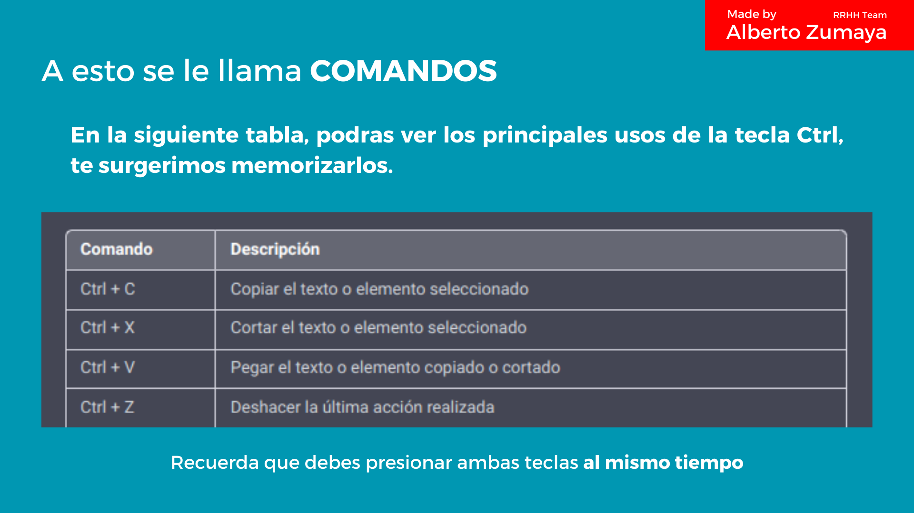
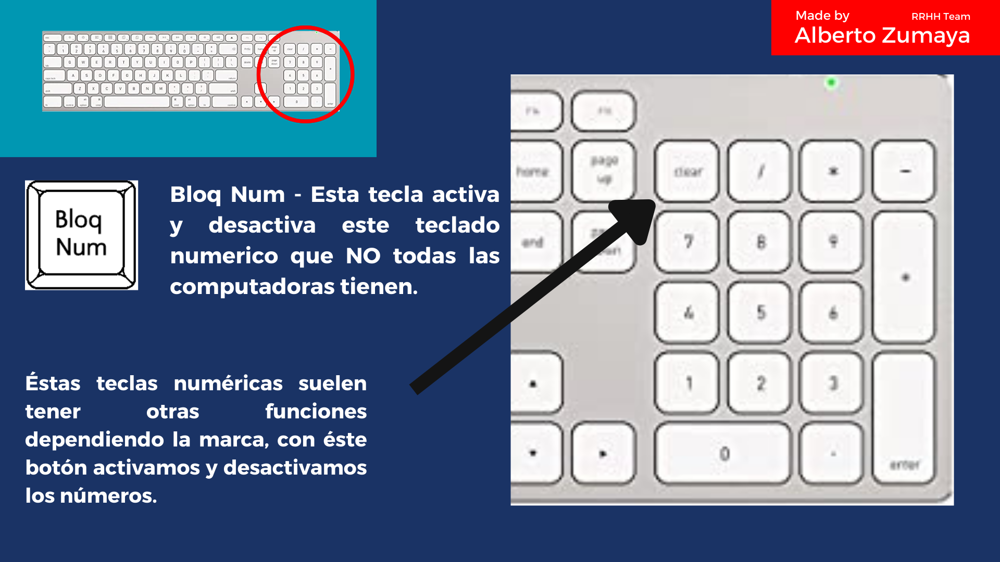
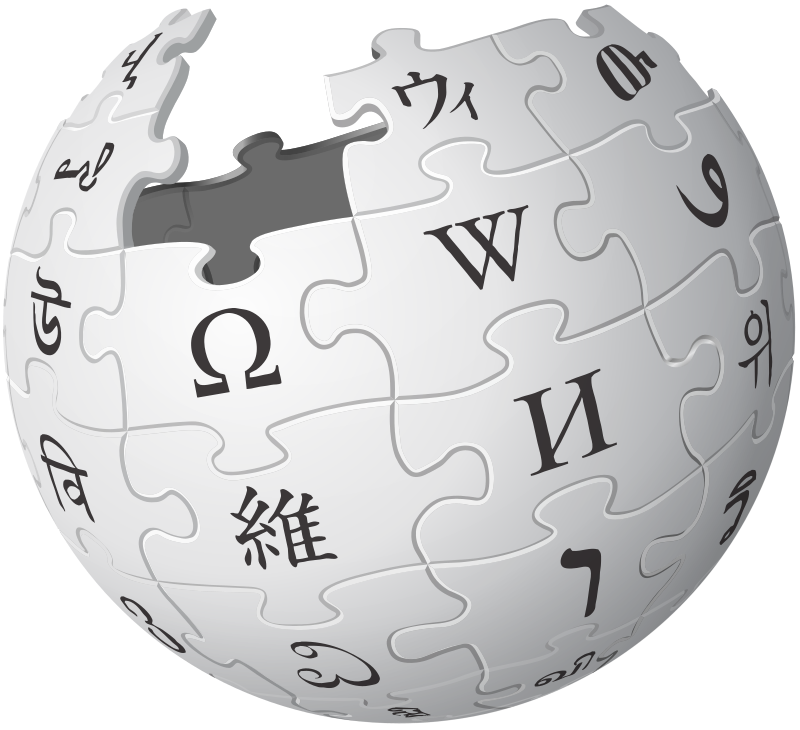

Infografía de la Historia del Internet y la Web
1969.
ARPAnet, la red informática que conectó a diversas universidades norteamericanas.
1970.
TCP/IP, nuevo protocolo de comunicación desarrollado por Robert E. Kahn y Vinton Cerf.

1971.
Se crea el correo electrónico, cuya primera aplicación para uso se llamó SNDMGS.

1976.
Se funda Apple gracias a Steve Wozniak, Steve Jobs y Ron Wayne.

1983.
ARPAnet adoptó el protocolo TCP/IP, dando la definición incipiente de Internet.

1988.
Nace el lenguaje marcado de hipertexto HTML, al igual que otras especificaciones como la URL o el HTTTP.
1991.
Aparece World Wide Web o www.
1994.
Se crea Amazon por Jeff Bezos, especializada en el comercio electrónico y servicios de computación en la nube a todos los niveles.
1996.
Se funda Hotmail, uno de los primeros servicios web de email.
1996.
Se crea el acuerdo internacional para el registro de dominios.

1998.
Se crea Google gracias a Larry Page y Sergey Brin, compañía especializada en los productos y servicios relacionados con Internet, software, dispositivos electrónicos y otras tecnologías.

2001.
Se crea Wikipedia por por Jimmy Wales y Larry Sanger. Enciclopedia libre, políglota y editada de manera colaborativa.

2004.
Se crea Facebook por Mark Zuckerberg.Hoy en día una de las redes sociales mas populares a nivel mundial.
2005.
Se crea YouTube por Chad Hurley, Steve Chen y Jawed Karim, se convierte en la mayor red para compartir videos.
Amazon Wikipedia
Historia del Internet
Apple Wikipedia
Facebook Wikipedia
YouTube Wikipedia
Wikipedia Wikipedia